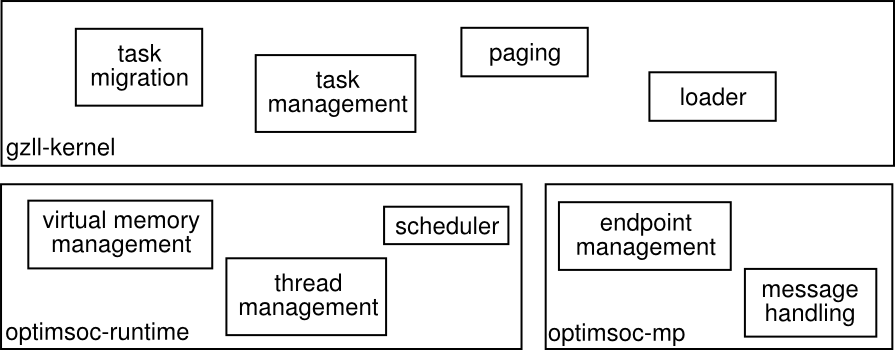

Welcome to gzll
gzll is the compute node OS specifically designed for the OpTiMSoC project (while it may be ported to other platforms such as Kalray's MPPA or Adapteva's Parellela via a hardware abstraction layer.
Despite being monolithic, gzll is a very thin layer that essentially has two different system call classes: task management and message passing. The tasks executed on top of gzll can be seen as containers, that communicate via FIFOs, similar to dataflow programming.
gzll uses the OpTiMSoC runtime library to manage virtual memory and threads. The overall structure and software partitioning is organized as follows:
